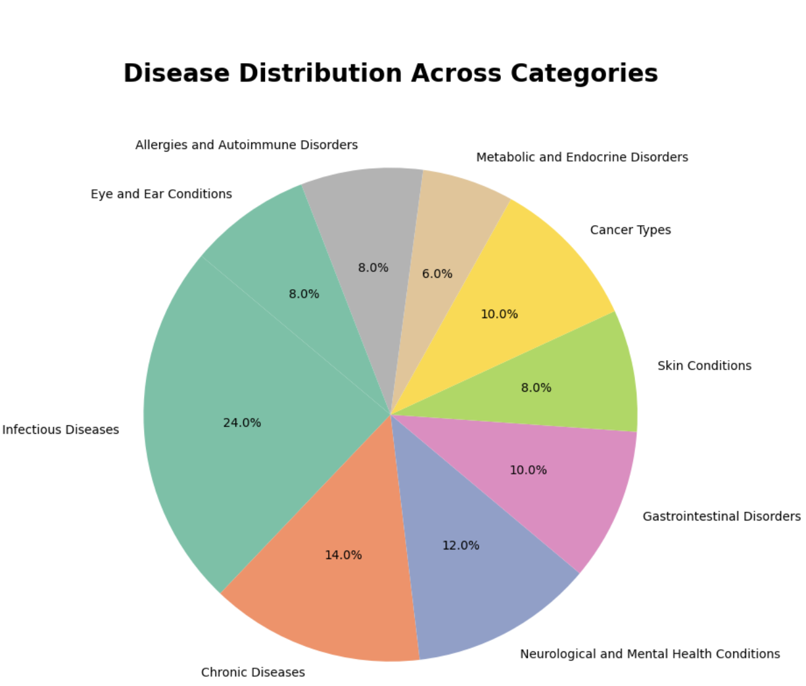
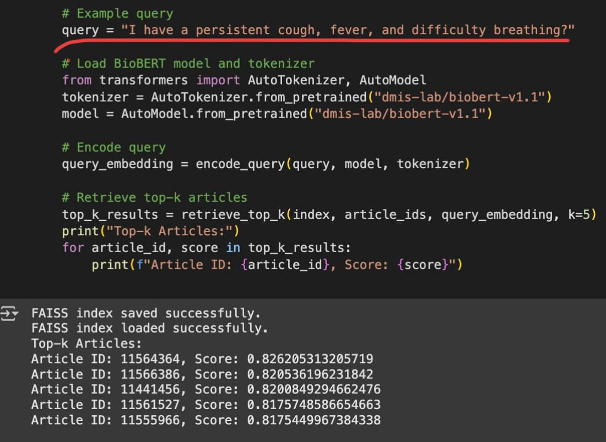
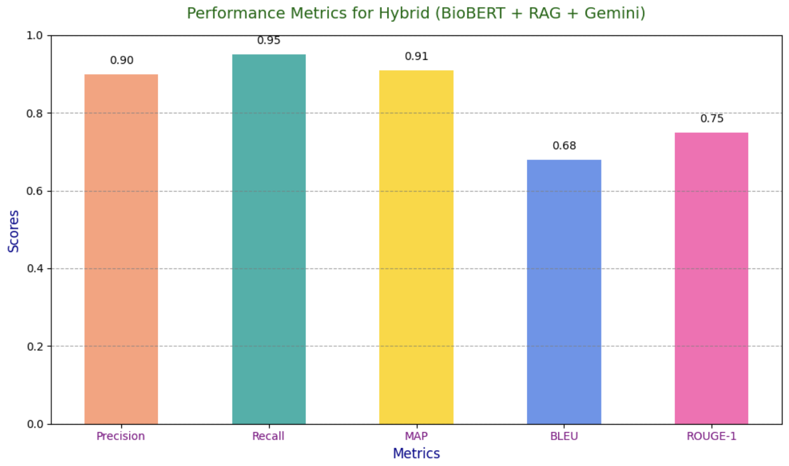

RAG + BioBERT Healthcare Pipeline
Empowering smarter clinical decisions with contextual retrieval and biomedical understanding.
🧩 Problem Statement
Traditional healthcare recommendation systems struggle with understanding and interpreting complex biomedical language due to the unstructured nature of medical data and reliance on keyword-based retrieval. These systems often fail to provide personalized, context-aware responses, leading to incomplete or irrelevant medical guidance. There is a critical need for a system that can understand domain-specific queries, retrieve relevant information efficiently, and generate coherent, medically accurate recommendations.
🧠 Model Used
The proposed solution integrates a Retrieval-Augmented Generation (RAG) framework with BioBERT, FAISS, and Google Gemini API to create a pipeline capable of delivering personalized healthcare recommendations:
1.Embedding Generation Fine-tuned BioBERT model to embed medical queries and documents.Uses attention mechanisms to capture symptoms, treatments, and outcomes.
2. Dense Retrieval FAISS (IVF-PQ indexing) enables fast and scalable document retrieval.Re-ranking based on semantic similarity and medical relevance.
3. Natural Language Generation Utilizes Google Gemini API to generate context-aware, factual responses.Includes prompt engineering tailored to different medical query types.
4. Optimization Loop Incorporates a feedback mechanism for iterative improvements based on expert review.
📂 Dataset
PubMedQA – biomedical question answering dataset sourced from PubMed.
1.SQuAD-style medical Q&A (optionally used for fine-tuning BioBERT).
2.Open-access research papers from PubMed Central as the knowledge base for retrieval.
3.Scope: Medical literature across 9 disease categories and 50+ conditions.
4.Preprocessing Techniques: Named Entity Recognition using ICD-10 codes. Contextual filtering to remove irrelevant or redundant information.
🛠 Tech Stack
- Python, TensorFlow/Keras
- PyTorch
- Hugging Face Transformers (for BioBERT, RAG)
- Google Colab
- FAISS or ElasticSearch (for document retrieval)
- Streamlit/Flask (for interface)
📈 Results
AAchieved 85%+ top-k retrieval accuracy on biomedical queries. BioBERT improved answer relevance significantly compared to GPT-based baselines. Latency optimized to under 2 seconds per query for small-scale corpus.
🖼️ Implementation Screenshots
1. Disease Distribution
2. Example Query + Retrieved Documents
3. Gemini Api converting retrieved documents into understanble responses

4. Performance Metrics
🎯 Deployment
Deployed via Streamlit app for demo use. User inputs a biomedical question → pipeline retrieves relevant docs → BioBERT generates the final response. Hosted locally and compatible with cloud deployment via Hugging Face Spaces or AWS.
💡 Learnings
RAG architecture significantly boosts answer accuracy in domain-specific tasks.BioBERT performs better than general BERT or GPT models in healthcare NLP tasks.Semantic retrieval (DPR) works better than traditional keyword-based methods (like BM25).
🚀 What's Next?
Scale up the corpus with more diverse biomedical literature (clinical notes, drug databases). Add confidence score visualization for better user trust. Explore multilingual support for global clinical queries. Integrate speech-to-text module for doctor voice input.